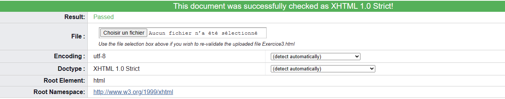

Un élément permet de marquer localement un document sans provoquer de retour à la ligne lors de visualisation par le navigateur. Parmi les plus courants, on retrouve les éléments permettant de faire apparaitre le texte en gras ou en italique, on peut même combiner les deux si on respecte bien l'imbrication des balises.
D'autres mise en forme sont possible come l'utilisation des exposants, des indices et du texte monospace.
D'autres éléments intégrés servent de marqueurs sémantiques et sont surtout destinés au traitement automatisé des documents. On peut ainsi repérer les variables, les citations, ou les abbréviations, CQFD !
L'insertion des images se fait également à l'aide dun élément intégré, l'élément img

1er para
2ème para
3ème para